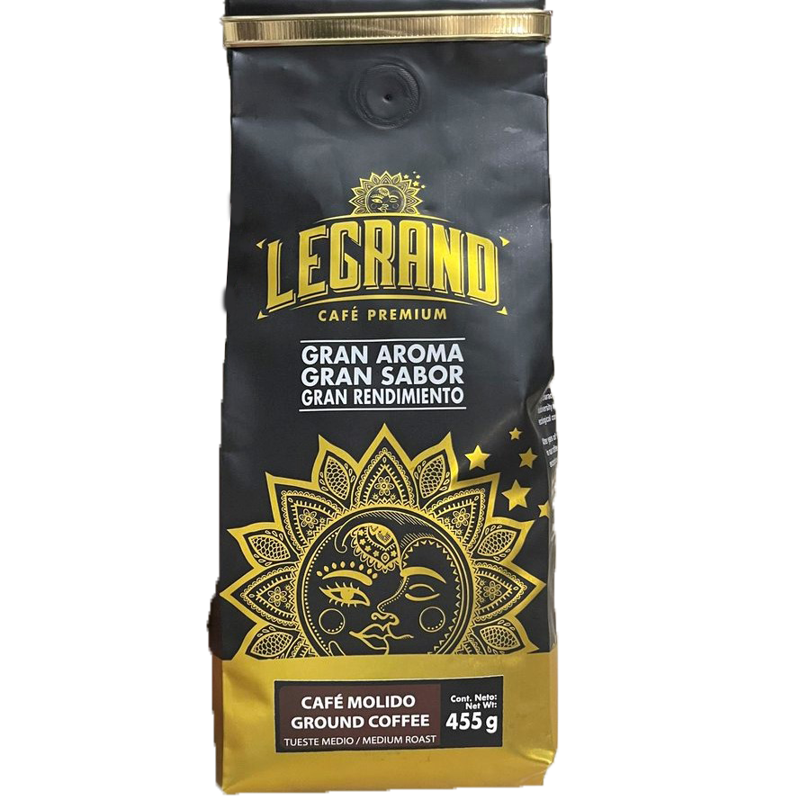
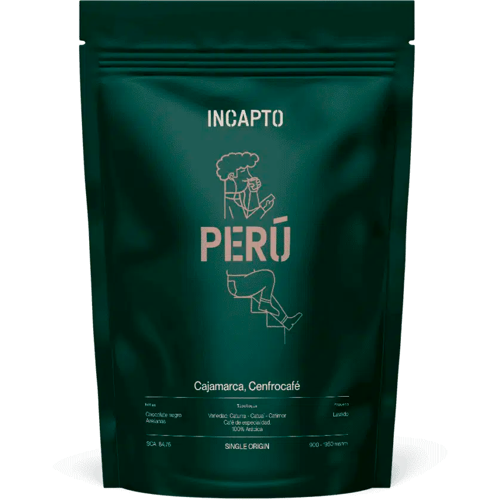

Tipos de granos

Grano Arábico
El arábica está considerado el mejor café en grano, ya que aunque tiene menos cuerpo que el robusta, es más equilibrado,
aromático y tiene una acidez muy agradable. Además, tiene menos cafeína que otras variedades.
El arábica tiene entre un 0,8% y un 1,4% de cafeína, muy lejos del 4% que puede llegar a tener un café robusta. Es sin
duda, un café sutil, delicado y elegante con un gran equilibrio entre sabor y cuerpo.
El grano de arábica puede distinguirse fácilmente a simple vista, ya que tiene una forma más alargada y aplanada que el
robusta y está atravesado por una línea en forma de ligera S, su característica más visible.

Grano Robusto
Originario de la República Democrática del Congo (antes "Congo Belga"), el cafeto robusta es una planta más resistente y
menos exigente a la hora de sus condiciones de cultivo. Así, es un cultivo que rinde más, ya que puede ser cultivado en
terrenos llanos, lo que aumenta la cantidad de plantas por superficie.
Es de sabor intenso, con mayor contenido de cafeína (dos veces más que el arábigo1) y con mayor acidez. Resulta una
infusión más densa (con más cuerpo). Es menos aromático y más simple respecto del arábica. Es la especie con que se
fabrica casi la totalidad de los cafés instantáneos y los molidos económicos para cafeteras de filtro.
 |
Café Colombiano |
|
«Colombia es el país con el mejor café suave del mundo gracias al proceso de producción y sus condiciones naturales así como la altitud, latitud y temperatura ideales para su cultivo. También por el trabajo del caficultor y de la recolección rigurosa de los granos maduros», dice Parmenio Angarita, director del centro de formación cafetera Educafés en Bogotá. Una opinión muy generalizada en el mundo y que, como otros tantos expertos cafeteros, corrobora Edwin Chaverra, barista colombiano afincado en España, quien atribuye esa etiqueta «a su sabor, fruto del proceso de lavado como método de producción» pero también a «la variedad de los cafés del país y la inversión en I+D» |
|  | Café Ecuatoriano |
|
En Ecuador se produce tanto café robusta como arábigo. El primero se cultiva especialmente en la región amazónica y región costa, mientras que el café arábigo se cultiva generalmente a alturas mayores, entre 1.000 y 1.800 m sobre el nivel del mar, en las estribaciones subtropicales de las provincias de la Sierra y además en la Provincia de Manabí donde especificas condiciones ambientales permiten cultivar este tipo de café casi al nivel del mar. El café es uno de los principales cultivos del País, involucra a unas 50 mil familias, la mayoría pequeños productores que utilizan sistemas de producción agroforestales. |
|  | Café Peruano |
|
Extraído a partir de los granos cultivados y procesados en las regiones andinas del país, el café peruano viene
consolidándose como uno de los de mayor calidad y excelencia. El territorio del Perú ofrece una gran diversidad de
climas, suelos y luz solar, un escenario ideal para el cultivo del cafeto arábigo, uno de los dos géneros preferidos de
café.
|